THE GAMES
ELEVEN MACHINES AND THE GAMES BEHIND THEM
Every machine in this arcade has a chapter of its own. It opens on a spread: the game’s screen and what it is about on the left, how to play it on the right. Then comes the game it pays tribute to: who made it, how, and what happened next.
The games here are new works. They borrow ideas, never code, pictures or sounds, and each adds tricks of its own. The stories of the originals are told from interviews, museum records and histories; where the accounts disagree, so does this book.
2.1 Adder
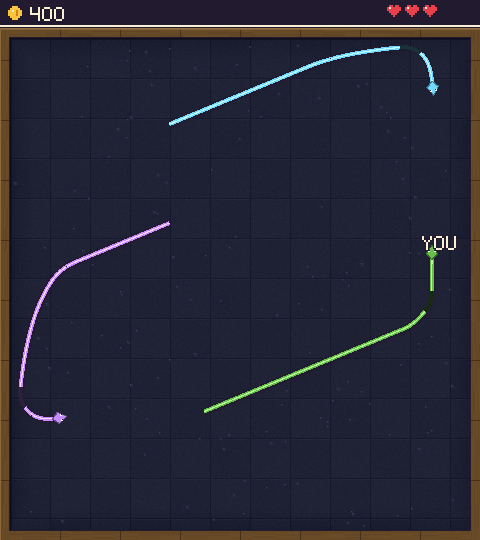
A tribute to Viper, a shareware snake for the Amiga from 1994 that few people ever played. Adder keeps its free movement and crowded pit, computer-controlled vipers included, but leaves thin solid trails with dim gaps. Last alive wins the round.
How to play
Turn your viper left or right relative to its heading with the stick or keys; release to keep going straight. On touch, horizontal position steers; click or tap only starts. All worms move at a constant 85 px/s, leaving thin solid trails that keep growing within the round. Walls and solid trails, even your own, eliminate you. Dim gaps are laid down as the worm grows, never cut into an existing trail. They remain passable; only the first pass through each scores 50 × round.
| Turn | A / D or Left / Right |
| Second player | Press J to join. From then on the arrows are theirs and player one keeps A / D. |
| Start / restart | Space |
No food, eggs, shedding or boost/strike. Dead worms leave their trails on the floor and stay out until the next round. Last alive wins; trails reset next round. Each human has three lives across rounds and loses one when first out; outlast a CPU and the life is kept. Game over when no human has lives left. Up to six vipers share the pit; the rest are CPUs.
The original
Viper
Amiga shareware · October 1994 · Nathaniel Myhre and Robert Drennan
Viper was, in the words of its own readme, “an AGA only snake game but with a twist.” Up to six snakes share the screen, each steered by a person or by the computer, and each can “travel in any direction (face any angle)” instead of turning on a grid. The vipers grow all the time, the walls kill, and a player scores by threading the holes that open along the worms’ bodies.
It needed an AGA Amiga such as the A1200 or A4000. The shareware version allowed three players; the registered one, for $12, allowed six, and came with a program that kept tournament statistics. It was uploaded to Aminet, the Amiga’s great software archive, in October 1994. Little else is known about the game or its two authors: it is one of the countless small games of the shareware years.
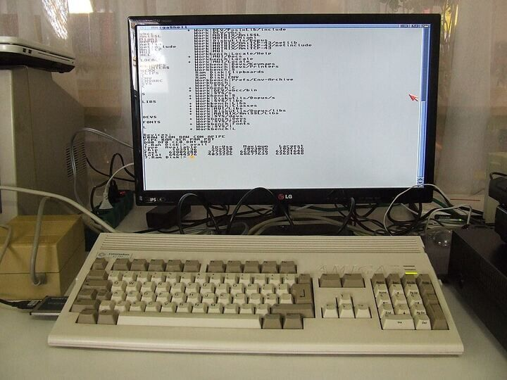
A family resemblance
Players who know Achtung, die Kurve!, the Czech game by Filip Oščádal and Kamil Doležal, will recognise the idea: lines that turn at any angle, with gaps in them. No source connects the two games; the same good idea seems to have occurred to more than one person in the early 1990s.
In this cabinet
Adder keeps Viper’s free steering and its crowded pit, computer vipers included, and makes the pit a trail arena: every worm moves at the same steady speed and leaves a thin solid trail with dim gaps in it. The first pass through a gap pays; the last worm moving wins the round.
Sources: Aminet, ViperAGA12 readme (1994); MobyGames, Viper (Amiga), archived copy; Wikipedia, “Achtung, die Kurve!”.
2.2 Bouncer
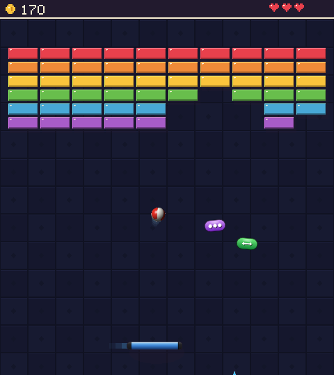
Our answer to Breakout (Atari, 1976). A wall of coloured bricks, one ball and a paddle that does more than it looks: it can dash, and the bricks you break drop bonuses that widen it, slow the ball, split it in three, or bring a spare life. Beware the narrow-paddle drop, and the bomb bricks that take their neighbours with them.
How to play
Keep the ball in play and clear every brick. One missed return costs a life.
| Move | A / D or Left / Right |
| Launch | Space, W or Up |
| Dash | Double-tap a direction |
On the touch surface, drag to position the paddle and tap to launch. Save your dash for a ball that is getting away.
At game over, press fire while CONTINUE counts down to play on against the bricks still standing.
The original
Breakout
Atari · arcade · May 1976 · conceived by Nolan Bushnell and Steve Bristow
Breakout turned Pong into a game for one: a single paddle, a ball, and a wall of bricks to knock down. Nolan Bushnell and Steve Bristow came up with the idea. Atari offered a bonus for every chip the design saved below fifty, and gave the job to a young employee, Steve Jobs.
Jobs brought in his friend Steve Wozniak, who still had a day job at Hewlett-Packard. Working four nights, Wozniak designed a board of about 45 chips, where a game of the day typically needed 150 or more. It was almost too clever. “It’s a dream, but it’s impossible to debug or produce,” said Atari’s Larry Kaplan, and the Breakout that Atari built used about a hundred chips.
The bonus
Jobs told Wozniak they had earned $700 and paid him half: $350. Years later Wozniak learned that the bonus had been about $5,000. Accounts differ on the details, but not on how the story ends.
Breakout’s screen was black and white; strips of coloured cellophane over it made each row of bricks a colour. Atari made 11,000 cabinets in the first run. Wozniak later said that “a lot of features of the Apple II went in because I had designed Breakout.” The game led to Taito’s Arkanoid (1986), and Tomohiro Nishikado named it as one of the inspirations for Space Invaders.
In this cabinet
Bouncer gives the paddle a dash, and the broken bricks drop gifts: a wider paddle, a slower ball, three balls at once, a spare life. Watch out for the drop that narrows the paddle, and for bomb bricks that take their neighbours with them.
Sources: Wikipedia, “Breakout (video game)”; IEEE Spectrum, “Atari Breakout”; Game Developer, “Steve Jobs, Atari employee number 40”.
2.3 Brawler
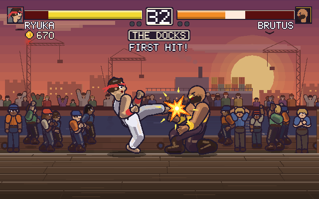
A one-on-one fighting game in the spirit of Street Fighter II (Capcom, 1991). Seventeen cartoon fighters, each in a martial art of their own, take on a ladder of sixteen challengers. Two attack buttons, high and low guards, special moves, and barrels to smash between bouts. A second player can take over a fighter at any time.
How to play
Choose a fighter and work your way through sixteen challengers. Watch the opponent’s stance before committing to a blow.
| Move | W A S D or arrows |
| Punch | Space or F |
| Kick | Z or G |
| Special move | Punch and kick together |
| Switch stance | Down twice, quickly |
| Other colours | Choose your fighter with kick |
| Two players | Player 1: W A S D, F, G. Player 2: arrows, J, K. |
Hold toward the opponent while attacking for a high blow. Three quick punches end in a hook; two quick low kicks, in a roundhouse off the back leg. A heavy clean blow leaves a fighter staggering. Guard high or low; one guard cannot cover both. Break the barrels for bonus points.
The original
Street Fighter II: The World Warrior
Capcom · arcade · March 1991 · directed by Akira Nishitani, designed with Akira Yasuda
Some 35 to 40 people worked for about two years on Street Fighter II. Capcom’s CPS-1 board let each fighter take as much memory as its animation needed. Director Akira Nishitani had won Capcom’s in-house tournament of the first Street Fighter while hardly having played it, and set out, he said, to make a sequel “so good, it will make the original Street Fighter look like a knockoff!”
The combo was an accident
Combos, chains of blows the opponent cannot block in between, were never planned. During a bug check on the car-smashing bonus stage, producer Noritaka Funamizu noticed that “during the punch timing, it was possible to add a second hit.” The team left it in as a hidden feature. “A bug? Maybe.” Guinness later named Street Fighter II the first fighting game to use combos.
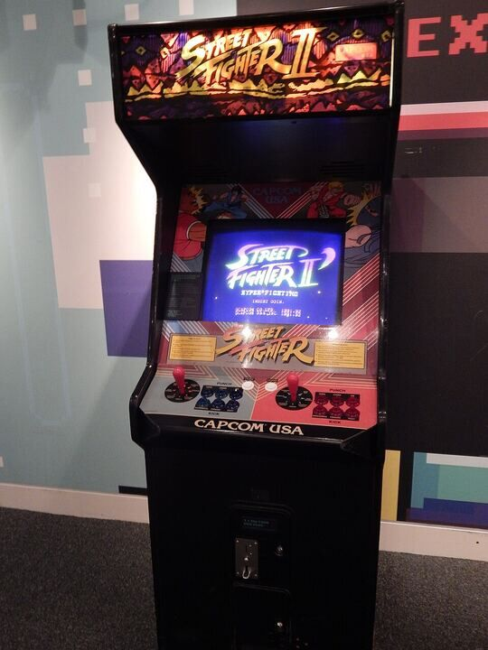
Down to the wire
Three days before the deadline Nishitani noticed the subtitle on the finished logo read “World Warrier”, and the letter had to be patched. The last version was done at 7 a.m. on 14 February 1991. Early builds had no limit on fireballs; it was “really funny firing hadouken after hadouken,” so the team allowed only two on screen.
Across its versions the game sold more than 200,000 arcade cabinets and over 6.3 million Super Nintendo cartridges, and it set off a wave of fighting games. It entered the World Video Game Hall of Fame in 2017.
In this cabinet
Brawler has seventeen cartoon fighters, each with a martial art of their own, and two attack buttons in place of six: hold toward the opponent for a high blow. Barrels wait to be smashed between bouts, and a second player can step in at any time.
Sources: Wikipedia, “Street Fighter II”; Akira Nishitani interview (1991), translated by shmuplations.com.
2.4 Bubbler
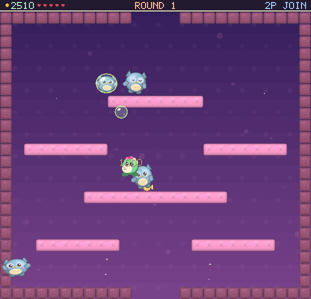
A tribute to Bubble Bobble (Taito, 1986), made for small hands and big grins. Blow a bubble around a monster, pop it, and sweet rewards tumble out. Clear every monster to move on to the next room. One or two players, and nothing in it is scary.
How to play
Trap a monster inside a bubble, then pop it to collect the reward. Clear the gang to move to the next room.
| Run | A / D or Left / Right |
| Bubble | Space or F |
| Jump | W, Up, Z or G |
| Second player | Press J or K to join. Then: arrows, J bubble, K jump. |
Pop several bubbles together for a bigger haul. Hold jump to ride a bubble. On the touch surface, slide to run and swipe upward to jump; touching the surface blows bubbles.
Out of hearts? Press a button while PLAY ON counts down to carry on in the same room with your hearts back.
The original
Bubble Bobble
Taito · arcade · 1986 · designed by Fukio Mitsuji
Fukio Mitsuji wanted a comic game with cute characters, one that would also bring in women and couples visiting the arcades, so he built it for two players working together. He wrote down more than a hundred ideas and chose bubbles. His first bubble-blower was a robot with a spike on its head; he dropped it as not cool enough and drew two little dinosaurs instead: Bub and Bob.
There are a hundred rounds. Dawdle and HURRY UP sounds, then an unbeatable white whale of a monster comes looking for you. A single player who clears round 100 is told to come back with a friend: only two players finishing together see the happy ending.
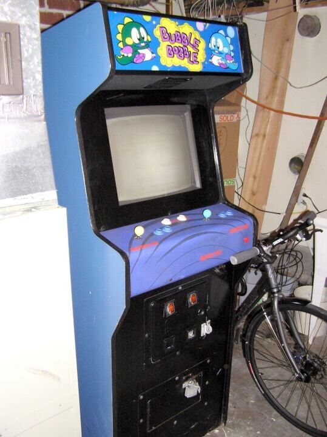
MTJ
Mitsuji signed his games “MTJ”. His boss at Taito was Tomohiro Nishikado, the maker of Space Invaders, who remembered the first pitch as “such a unique idea that I recall immediately instructing him to start working on it.” The rare red bubble, a one-in-4,096 chance, is nicknamed the “MTJ ball”. In 1996 Taito announced that the game’s source code had been lost, and later versions were rebuilt from the arcade boards.
In this cabinet
Bubbler is made for small hands: big plush monsters, sweets tumbling out of every popped bubble, and nothing scary. Ride a bubble by holding jump, pop a cluster for a bigger haul, and let a friend drop in at any time.
Sources: Wikipedia, “Bubble Bobble” (English and Japanese editions); Fukio Mitsuji’s 1989 Gamest column, translated by shmuplations.com.
2.5 Defender
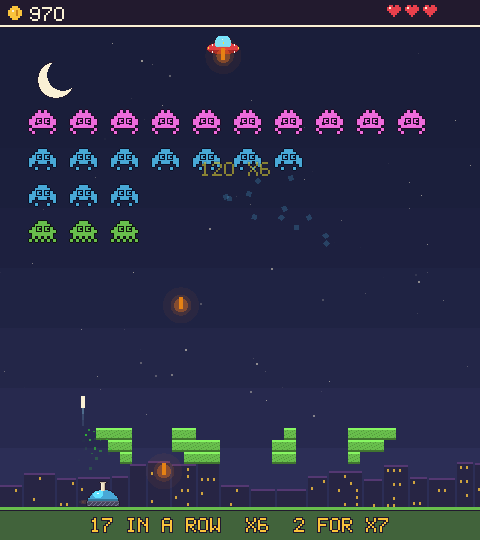
Space Invaders (Taito, 1978) with a few new tricks. Rows of aliens step down the screen, shields crumble under fire, and a saucer drifts across the top for bonus points. Some saucers stop and charge a death ray, a lone diver breaks from the ranks, and every fifth wave ends with a mothership.
How to play
Keep the alien fleet away from Earth. Move beneath the invaders and shoot before they reach the ground.
| Move | A / D or Left / Right |
| Fire | Space |
On the touch surface, slide to position the cannon and hold to fire. Clear a lane before the fleet gets too close.
Hits in a row raise the score multiple, shown under the ground; a missed shot or a lost cannon starts the count again.
The original
Space Invaders
Taito · arcade · July 1978 · designed by Tomohiro Nishikado
Tomohiro Nishikado designed, programmed, drew and scored Space Invaders himself. He spent about six months building the tools to make it and three or four more programming it, on an Intel 8080 processor. The screen could not show colour; strips of cellophane did that. His contract required him to stay anonymous, so Taito did not credit him.
The invaders speed up as you shoot them for a simple reason: with fewer aliens on the screen the processor drew each frame faster. Nishikado liked it and kept it.
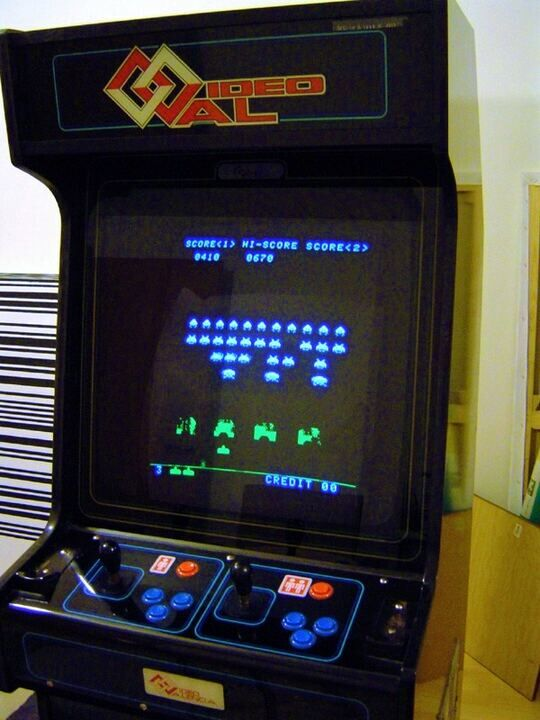
The coin shortage that never was
A famous story says Space Invaders emptied Japan of 100-yen coins. Coin experts who checked the Japan Mint’s figures found no sign of a shortage. What is true is remarkable enough: more than 100,000 machines were in Japan by the end of 1978, and the Atari 2600 version of 1980, the first licensed home version of an arcade game, sold over a million copies in its first year.
At Taito, staff would say “I’ve got to go to the bathroom,” slip away to play it, and not come back. The mystery ship appears according to how many shots you have fired, because Nishikado found random numbers too much trouble. And the giant monsters on the cabinet art are not in the game at all: the artist drew from its working title, Space Monsters.
In this cabinet
Defender keeps the marching fleet and the crumbling shields, and adds a few tricks: saucers that stop to charge a death ray, a lone diver breaking from the ranks, a mothership every fifth wave, and a score multiple that grows with hits in a row.
Sources: Wikipedia, “Space Invaders” and “Tomohiro Nishikado”; Nishikado interview from Game Maestro (2000), translated by shmuplations.com; Time Extension.
2.6 Meteors
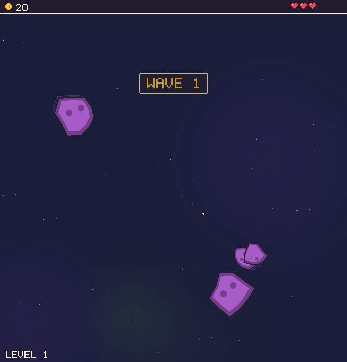
Asteroids (Atari, 1979): a ship that coasts, spins and fires into a field of rocks that split into smaller rocks. Saucers cross the screen and shoot back, and when you are cornered there is hyperspace — a quick jump to somewhere else, with no promise of where.
How to play
Pilot through the asteroid field. Large rocks split into smaller pieces, so keep an escape route clear. A broken rock sometimes leaves a crystal: fly through it for 500 points before it fades.
| Turn | A / D or Left / Right |
| Thrust | W or Up |
| Fire | Space |
| Hyperspace | Z |
Use short bursts of thrust to keep the ship under control. The second red button is hyperspace; the first fires.
Aim pays: every five hits in a row raise the score multiple, up to ×4, shown after the score. A shot that flies off without hitting anything starts the count again.
The original
Asteroids
Atari · arcade · November 1979 · Lyle Rains and Ed Logg
In April 1979 Atari’s engineers were looking at an unfinished game with an asteroid in it that could not be destroyed. Lyle Rains asked why not make a game where you shoot the rocks and blow them up. Ed Logg designed and programmed it, and modelled the ship on Spacewar!, which he had played at university in Berkeley.
Rains first pictured an ordinary television picture. Logg chose a vector display, which draws sharp lines on a 1024 × 768 grid instead of 320 × 240 pixels, so players could see exactly where the ship was aiming. The vector hardware had been finished by Howard Delman, today Wendi Allen, who first used it in Lunar Lander.
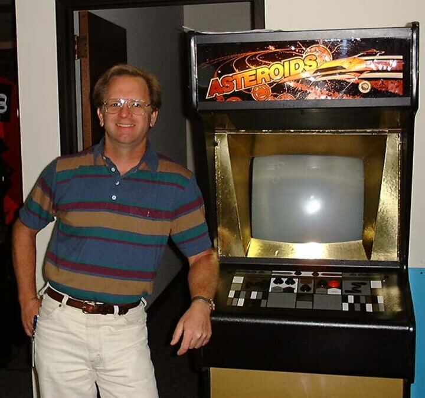
“When are you going home?”
Atari staff kept asking Logg when he was leaving for the night, so that they could play the prototype. He built them a second one, and every morning found new high scores on it.
Asteroids became Atari’s best-selling arcade game, with more than 70,000 cabinets, and the top-earning arcade game in America in 1980. A popular story says operators had to fit bigger coin boxes; Logg says he never heard of it. Its hyperspace button was a gamble from the start: the ship could reappear on top of a rock, or blow up. The game entered the World Video Game Hall of Fame in 2024.
In this cabinet
Meteors flies the same way: a ship that coasts and spins, rocks that split into smaller rocks, saucers that shoot back and hyperspace with no promise of where. A broken rock sometimes leaves a crystal worth flying through, and steady aim raises the score multiple.
Sources: Wikipedia, “Asteroids (video game)”; Game Developer, “Ed Logg on Asteroids and Gauntlet”; The Strong National Museum of Play.
2.7 Raider
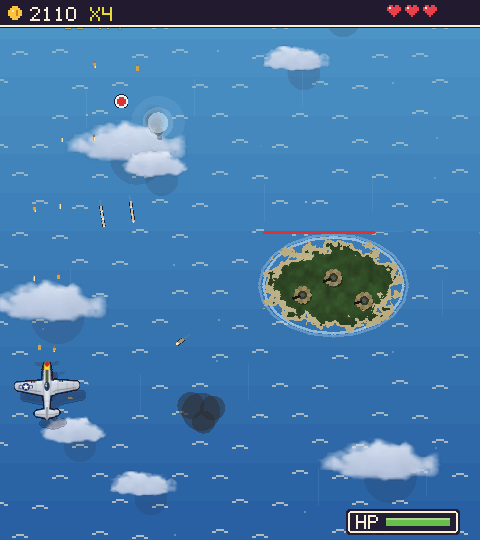
A vertical shooter in the manner of 1942 (Capcom, 1984). Take off from the carrier and fly over open sea, islands and enemy gun boats, then face a boss at the end of every stage. Your throttle is your own to manage: fly too slowly and the plane stalls.
How to play
Fly through the islands and coastline to the mainland. Bring down enemy aircraft and keep clear of the ground batteries.
| Steer | A / D or Left / Right |
| Throttle | W / S or Up / Down |
| Fire | Space |
Use the throttle to choose your pace. Fly too slowly and the plane stalls. Watch for flak as well as the aircraft ahead.
Fly clean: every five targets destroyed without taking a hit raise the score multiple, up to ×6, shown after the score. Hold fire on the carrier to hurry the take-off. At game over, press fire while CONTINUE counts down to fly the same level again.
The original
1942
Capcom · arcade · December 1984 · directed by Yoshiki Okamoto
1942 was the first Capcom game designed with Western players in mind. Okamoto wanted a shooting game people “would have an easy time getting into. That’s why we came up with the idea of a World War 2 setting.” And, he said, “that was also why the player ship is an American P-38 — we had our eyes on the American market.”
The player flies over the Pacific towards Tokyo. A second button loops the plane out of trouble, three loops a stage, with a bonus for any left over. Shooting down a whole red formation leaves a power-up, such as two escort fighters at the wings. 1942 also kept a second high score: the best hit percentage.
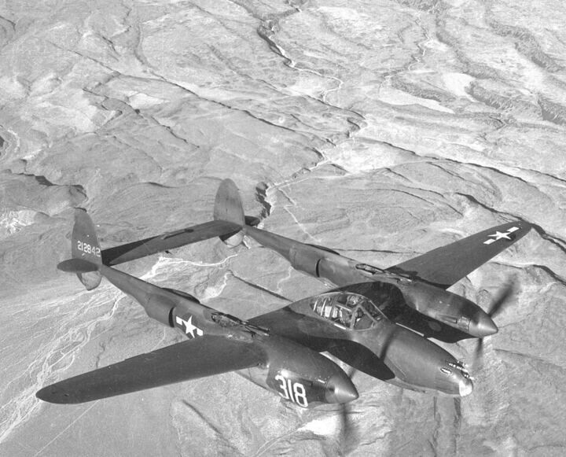
From Konami to Capcom
Before Capcom, Okamoto made the hits Time Pilot and Gyruss at Konami, which had asked him for a driving game; the disagreements ended with him leaving. He joined Capcom in 1983 as one of its first designers. “We don’t make games for ourselves,” he once said. “I don’t actually play games very much.”
1942 became Capcom’s breakaway hit. Its version for the Nintendo Entertainment System, Capcom’s first step into home consoles, sold over a million copies, and the arcade game began a series that continued with 1943: The Battle of Midway in 1987.
In this cabinet
Raider borrows the lone fighter over open water and makes the flying your own: a throttle to manage, a plane that stalls if you fly too slowly, a carrier take-off at the start of every stage and a boss at its end.
Sources: Wikipedia, “1942 (video game)”, “Yoshiki Okamoto” and “Capcom”; Capcom staff interview, translated by shmuplations.com; Killer List of Videogames; arcade-history.com.
2.8 Rally
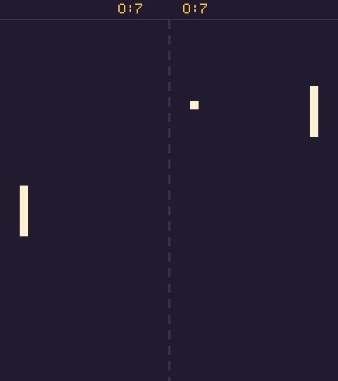
Pong (Atari, 1972), as plain as it started. Two bats, one ball, first to seven. Every return sends the ball a little faster. Play the computer, or turn the other dial and play a friend.
How to play
Keep the ball past the other paddle. The first player to seven points takes the match.
| 1 player | W / S or Up / Down |
| 2 players | I / K (the second bat) |
| Start and serve | Space (or any key to serve) |
On the touch surface, each player drags in their own half. The rally speeds up with each return. Two-player play uses one credit for each player.
The original
Pong
Atari · arcade · 29 November 1972 · designed by Allan Alcorn
Nolan Bushnell gave Atari’s new engineer, Allan Alcorn, a warm-up exercise: a simple game of table tennis. Bushnell said it was for a contract with General Electric. There was no contract; Bushnell, Alcorn said later, “just wanted me to practice on something.” That spring Bushnell had played the tennis game on the Magnavox Odyssey.
Alcorn built Pong from plain logic chips, without a microprocessor. He split each paddle into eight segments so the ball leaves at a different angle depending on where it hits, and made the sounds from tones already in the circuit. The prototype was a $75 black-and-white television in a wooden cabinet, with a coin mechanism from a laundromat and a milk carton inside to catch the quarters.
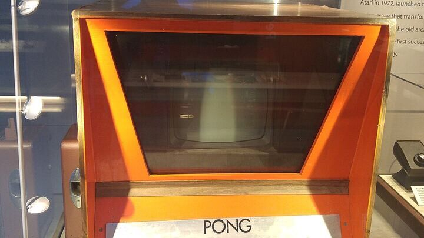
Too many quarters
The prototype went into Andy Capp’s Tavern in Sunnyvale. Soon after (the accounts range from the next day to two weeks) the owner rang: the machine had stopped working. Alcorn found it jammed with quarters. The story comes from Alcorn himself, and it has been told ever since.
Bushnell wanted a round ball. Alcorn refused, and the ball stayed square. Pong went on sale on 29 November 1972, earned about four times as much as other coin machines, and sold more than 8,000 cabinets by the end of 1974. A home version followed in 1975, sold by Sears. Pong is in the Smithsonian’s collection.
In this cabinet
Rally is Pong as plain as it started: two bats, one ball and a dial for each player. First to seven wins, and every return sends the ball a little faster.
Sources: Wikipedia, “Pong” and “Atari, Inc.”; Computer History Museum; Allan Alcorn interview, The Atari Compendium; The Register (2012).
2.9 Rounds

A paper round in the spirit of Paperboy (Atari Games, 1985), moved to Copenhagen at dawn: a cargo bike from Noerrebrogade over Dronning Louises Bro, past Rundetaarn to Amalienborg, papers for both sides of the street. Each day brings its own weather and ends on the quay at Nyhavn. Deliver well and the round grows; miss and it shrinks.
How to play
Stick to steer, up to pedal faster, down to slow; A throws left, B throws right. Lit doors with two hearts take the paper: the letterbox scores 250 (ride close), the doorstep 100 (further out). Miss a subscriber and a heart breaks; two and they cancel. A sample in a neighbour's blue box scores 150 and may win a subscriber. Ride through the newsstand cart for ten more papers. Wind, rain, fog, market day and Sunday's double bundles change the days; each ends in Nyhavn, papers onto tables, ships and boats.
| Steer | A / D or Left / Right |
| Faster / slower | W / S or Up / Down |
| Throw left | F or Space |
| Throw right | G or Z |
Every danger shows first: reverse lights, a rattling gate, a sprinkler's hiss, a tourist staring at a phone. Give way at bus stops, stop for red at junctions, and turn left the Copenhagen way: across on green, wait in the bike box, go on the next green. A paper thrown near a dog is fetched instead. J starts or joins a tandem for two (front: W A S D, F; back: arrows, J or K); tandem games keep no best.
At game over, while homes still take the paper, press fire as CONTINUE counts down to ride the same day again.
The original
Paperboy
Atari Games · arcade · 1985 · John Salwitz, Dave Ralston, Russel Dawe, Carl Bedard
Dave Ralston pitched Paperboy at a brainstorming session in February 1983, drawing on his own childhood paper round, and sketched it on a cocktail napkin. It came out in 1985 from Atari Games, the arcade company that carried on when Atari was split up in 1984.
Players steered with real handlebars: a Star Wars cabinet yoke rebuilt as bicycle bars by engineer Milt Loper. Push forward to pedal faster, pull back to brake, press the button on either side to throw. Players twisted the bars so hard that they were made narrower.
Too strange at first
Early versions of the street had rolling pianos, speedboats, giant snails and ducks in suits. Test players liked none of it except an old lady with a shopping cart, so the street filled with ordinary people instead; the Grim Reaper survived the cut. A playable papergirl was dropped for lack of memory. The designers hid their initials on the cars, and the two players’ colours are those of the San Francisco Giants and the Los Angeles Dodgers, the teams of Salwitz and Ralston.
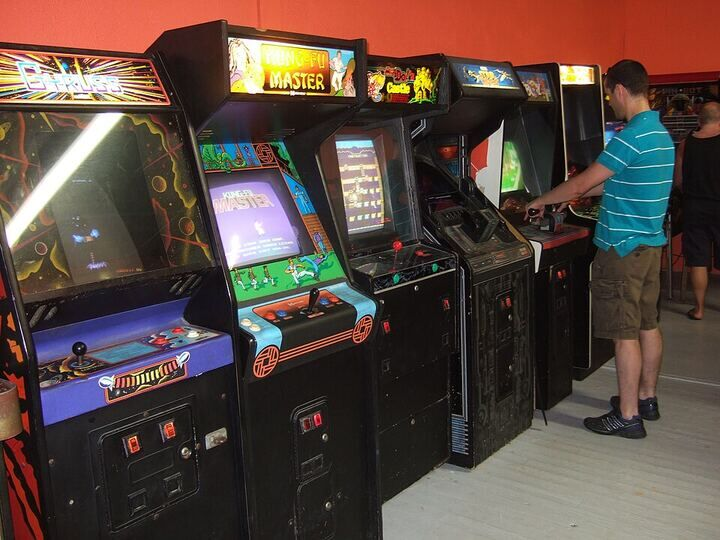
In this cabinet
Rounds moves the round to Copenhagen at dawn, on a cargo bike: through the letterbox is best, the doorstep is good, the garden is a miss. Each day has its own weather and ends on the quay at Nyhavn, and two players ride a tandem.
Sources: Wikipedia, “Paperboy (video game)”; Thumbsticks, “John Salwitz on the making of Paperboy”.
2.10 Serpent
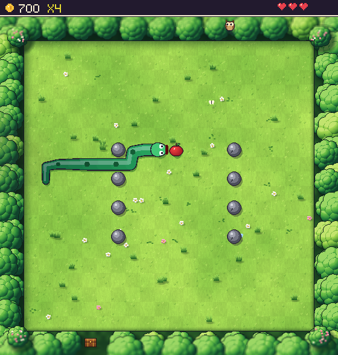
Snake, the game that has lived on arcade boards and hundreds of millions of phones. Eat to grow, and do not bite yourself. A golden mouse appears for a few seconds and scurries off when you come near, and obstacles arrive as the levels climb.
How to play
Steer the serpent toward food and leave room for its growing tail. A collision ends the run.
| Steer | W A S D or arrows |
| Start | Space |
On the touch surface, swipe in the direction you want to travel.
The originals
Blockade and Snake
Gremlin Industries · arcade · 1976 / Nokia · mobile phone · 1997–98 · Taneli Armanto
The snake game began with a physicist who was bored. At Gremlin Industries, Lane Hauck was simulating a random walk, “the drunk and the lamppost”, and stopped the drunk from going back to a square he had visited. The drunk got trapped. “After awhile, the model is teaching you some things!” The result was Blockade (November 1976): two players steering lines that become walls.
Twenty years later Taneli Armanto, an engineer at Nokia, wrote Snake for the Nokia 6110: he wrote it in 1997, and the phone went on sale in 1998. The screen had 84 × 48 pixels. In Finnish the game is Matopeli, the worm game. The phone’s infrared port allowed two players to play between two phones, but Armanto built the game on an older phone without one, so the two-player mode was never tested, and most players never knew it was there.
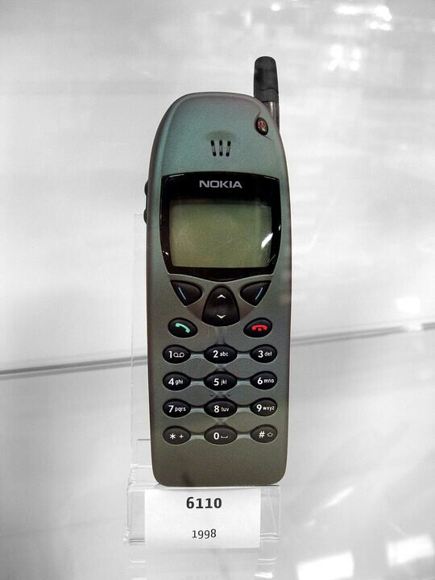
A tiny tiny delay
Turning at the edge of the screen kept killing players, so Armanto added a “tiny tiny” delay before a crash: a few more milliseconds to save the snake. He got the job by a mix-up. A colleague had played a computer game by a “T. Armanto”, a rare name in Finland, and assumed it was Taneli’s. It was his nephew’s.
Nokia estimates that Snake has been on some 350 million devices. In 2012 the Museum of Modern Art in New York announced it would add Snake to its collection.
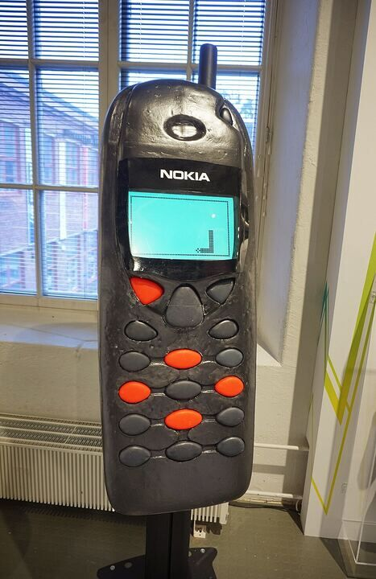
In this cabinet
Serpent puts the snake on a sunny meadow: eat to grow, do not bite yourself. A golden mouse appears for a few seconds and scurries off when you come near, shears cut a long snake short, and obstacles arrive as the levels climb.
Sources: Wikipedia, “Blockade (video game)”, “Snake (1998 video game)” and “Nokia 6110”; Nokia Conversations blog (2009, archived); It’s Nice That (2021).
2.11 Warlock
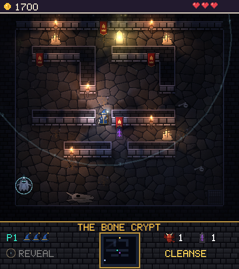
A maze shooter in the spirit of Wizard of Wor (Midway, 1981). Descend a rival sorcerer's tower, clearing each chamber of its conjured monsters and cleansing its cursed rune stones. The cellars are lit only by torches, candles and your own staff. Invisible wraiths wait in the dark; cast reveal to flush them out, and mind the spellhounds it calls to where you stood.
How to play
Move through the corridors, facing where you want to shoot. A casts a bolt down the corridor you face (hold to keep firing). B casts reveal: a ring that exposes wraiths, leaves a fading outline where each was, and alerts every spellhound. Cleansing a rune lights nearby corridors and keeps wraiths visible; clean every stone and clear every monster to open the stairs down. The scrying glass under the cellar shows every monster, even an unseen wraith. When a chamber's last monster falls, a dragon whelp may burst in: strike it before it flies off and the next chamber pays double. Slain monsters sometimes leave a potion: blue for haste, gold for points, red for a spare hat. Cast bolt straight after reveal and the two spells combine into an arcane lance that pierces every monster down the corridor. Past the sixth chamber the wings repeat, mirrored.
| Move | Arrows or W A S D |
| Bolt | Space or F |
| Reveal | Z or G |
On the deck, tilt the stick to move, A casts the bolt, B casts reveal. On the title, J starts a game for two; in play, a second wizard drops in with J; she moves with the arrows, casts bolts with J and reveal with K. Both wizards see each reveal, and a spellhound races to whoever cast it. Friendly bolts pass straight through your partner. When one wizard runs out of lives, the other can still clear the chamber and bring her back with a single life.
At game over, cast a bolt while CONTINUE counts down to try the same chamber again.
The original
Wizard of Wor
Midway · arcade · 1981 · Tom McHugh and Dave Nutting, Dave Nutting Associates
Wizard of Wor was designed and programmed by Tom McHugh and Dave Nutting at Dave Nutting Associates, the team that made games for Midway. Two Worriors hunt monsters through a dungeon maze; two players can fight side by side, or shoot each other for points. Garwors and Thorwors turn invisible, though the radar still shows them.
When the last monster falls, a Worluk may try to escape through a side door: shoot it and the next maze pays double. Then the Wizard of Wor himself may appear, teleporting about and throwing lightning, until he is shot or a Worrior falls.
The voice in the machine
A speech chip lets the Wizard taunt the players: “Another coin for my treasure chest.” The game’s own text says that scores of 150,000 or more are exceptional. An early prototype, called Invisible Monsters, had no voice at all. Its copyright date is 1980; it reached the arcades in 1981.
In this cabinet
Warlock takes the maze shooter into a rival sorcerer’s cellars, lit only by torches, candles and your own staff. Invisible wraiths wait in the dark; cast reveal to flush them out, cleanse the cursed rune stones, and mind the spellhounds the light calls in.
Sources: Wikipedia, “Wizard of Wor” and “David Nutting”; arcade-history.com.